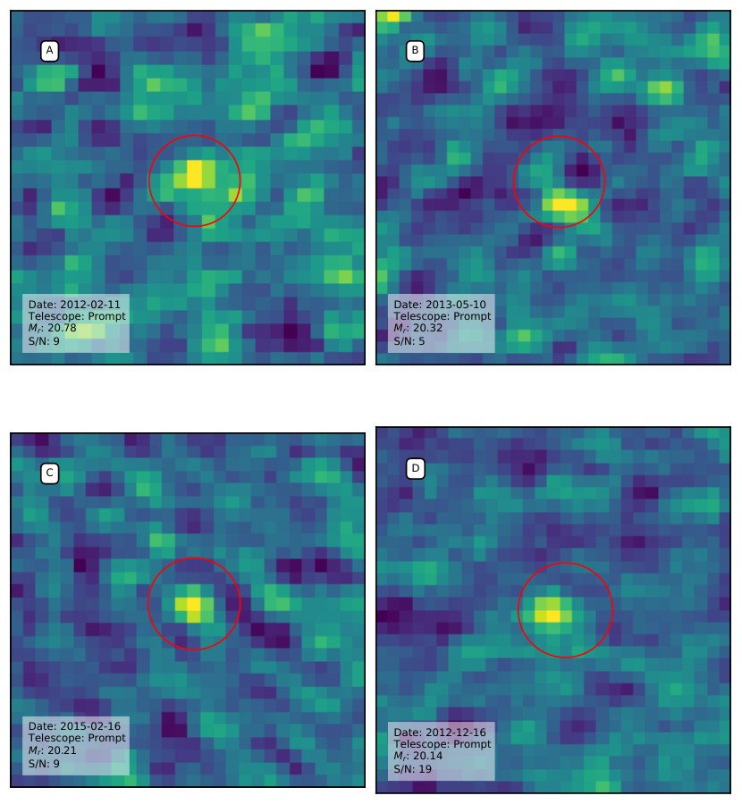
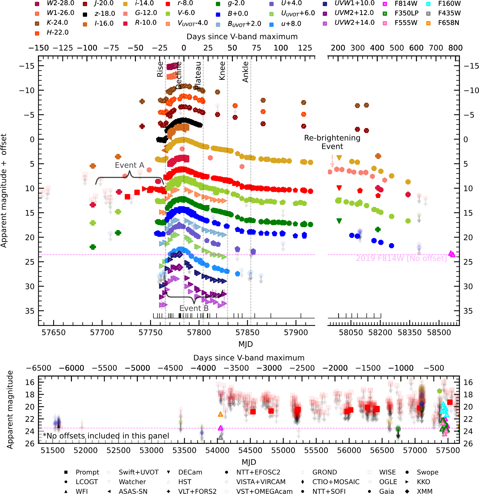
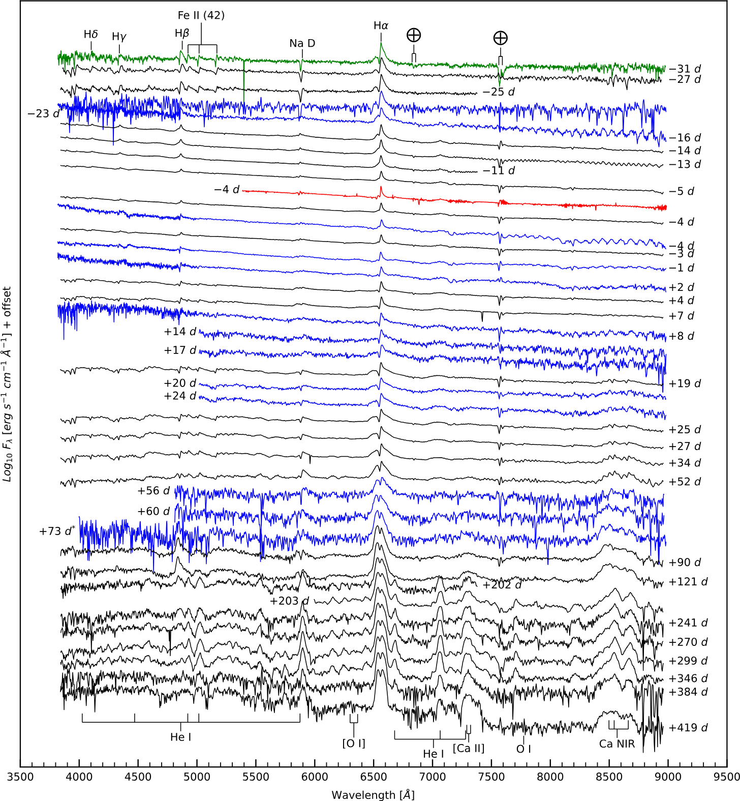

Photometric and spectroscopic evolution of the interacting transient AT 2016jbu (Gaia16cfr)
Brennan, S. J., Fraser, M., Johansson, J., et al. · MNRAS 513, 5642 (2022)
Overview
Background. AT 2016jbu is a long-duration, luminous transient powered by interaction between fast ejecta and slower circumstellar material. A full observational record is required before physical models can be tested in detail.
Science. This paper (the first of two on the same object) delivers multi-colour light curves and a time-resolved spectral sequence from discovery through multiple peaks and decline phases.
Impact. The data set is the empirical benchmark any theory of the explosion must reproduce; it also pairs directly with the companion paper on progenitor, environment, and modelling for a complete picture of one well-observed event.
Key figuresfrom the paper






Colour evolution, Hα decomposition, and comparison events are in the arXiv HTML and PDF versions.